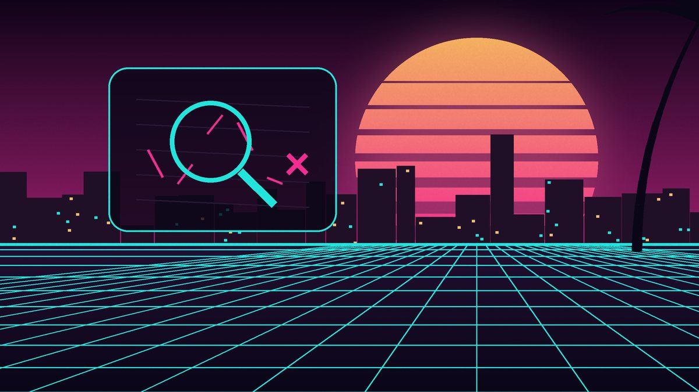

Dónde está la caja fuerte del refugio de moteros del capítulo final en GTA 6, y su código
El mayor escondite de la banda de moteros del capítulo final de GTA 6 guarda tres objetos de valor: una caja fuerte, un revólver especial y una moto única. Esta es la ubicación exacta de cada uno y el código para abrir la caja.
Por Redacción Golpe Diario · Publicado el

Qué ha pasado
El refugio de moteros está en un bar al este de Ambrosia, según la guía de Gamerant: por fuera parece un bar corriente, pero es el mayor de los escondites de la banda The Final Chapter, con varios moteros vigilando tanto dentro del local como en el patio trasero.
Dentro hay tres objetos de valor. El primero es una caja fuerte situada en la sala de atrás, en la esquina, junto a la puerta de salida: su código es 1982, el año de fundación de la banda, que aparece escrito en una bandera negra colgada cerca de esa misma puerta. Lo confirman tanto Gamerant como Xboxplay, que describen la misma sala y el mismo código.
El segundo objeto es un revólver especial, el Ride Free H&L .38, guardado en un estuche de armas sobre una mesa, en la misma sala que la caja fuerte y junto a la bandera. El tercero es la moto LCC Monarch Avarus, que está en el patio trasero del bar: según la guía de Gamerant, al entrar en el patio hay que girar a la derecha para encontrarla, y en el banco de trabajo de al lado hay un casco especial a juego con la moto.
Para llegar hasta la sala de atrás sin tener que cruzar la zona donde se concentran los moteros, Gamerant recomienda entrar por la puerta trasera del bar, justo detrás de la mesa de billar. Xboxplay confirma la misma ubicación de la caja fuerte y añade que conviene neutralizar antes a los moteros de la zona, para poder registrar la sala y el patio con tranquilidad y sin tiros de por medio.
Este refugio es uno de los puntos de interés del capítulo final relacionados con las operaciones de la banda, al margen de las misiones principales de la historia: no hace falta avanzar en la trama para visitarlo, basta con llegar hasta el bar y entrar por la parte de atrás.
Qué significa para ti
- Entra por la puerta trasera del bar, detrás de la mesa de billar, para no tener que cruzar la zona donde están los moteros.
- Neutraliza primero a los moteros de la zona para registrar la sala y el patio con calma.
- En la sala de atrás, ve a la esquina junto a la puerta de salida: ahí está la caja fuerte. Código: 1982, el año de la bandera negra de la banda.
- En la misma sala, junto a la bandera, hay un estuche con el revólver Ride Free H&L .38.
- Sal al patio trasero y gira a la derecha para encontrar la moto LCC Monarch Avarus; el casco especial está en el banco de trabajo de al lado.
Contrastado con: Gamerant · Xboxplay.games
Sigue leyendo
Los cuatro carteles de Peewees: dónde están y qué ropa gratis dan al escanearlos todos
Hay cuatro vallas publicitarias de la cadena de pollo frito Peewees repartidas por Leonida que solo sirven para algo si las escaneas con el móvil. Encontrarlas las cuatro desbloquea un regalo en la tienda de Belville.
WAiNK: la categoría de coleccionables que esconde 31 puntos de interés y un trofeo por hacerte con el 100 % de GTA 6
GTA 6 reparte landmarks, curiosidades y esculturas por todo el mapa para que los escanees con el móvil de Jason o Lucía. Esta es la cuenta real de cuántos hay y qué trofeo consigues si los juntas con el resto de coleccionables.
El Thrax, el premio final de la lista de coches de Randy en GTA 6, está en una isla que no sale en el mapa
Randy pide 22 coches para su colección particular, y el último, un Thrax, lo guarda en una isla a la que solo se llega en ferri y que el juego no te señala.